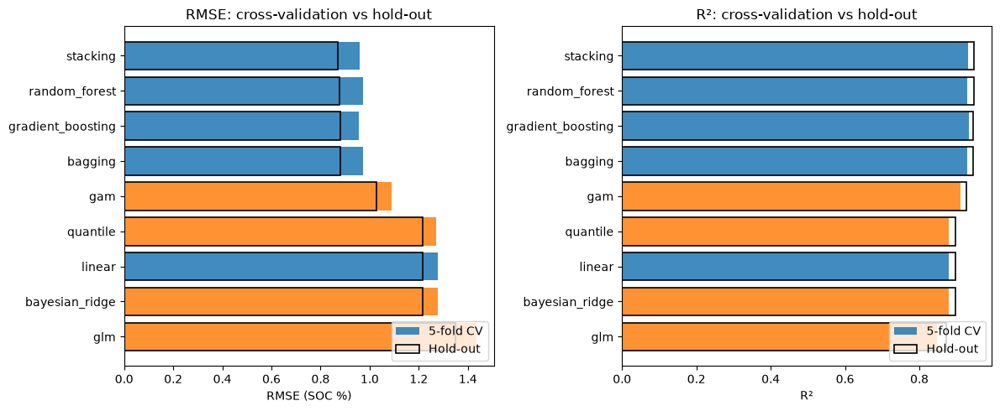
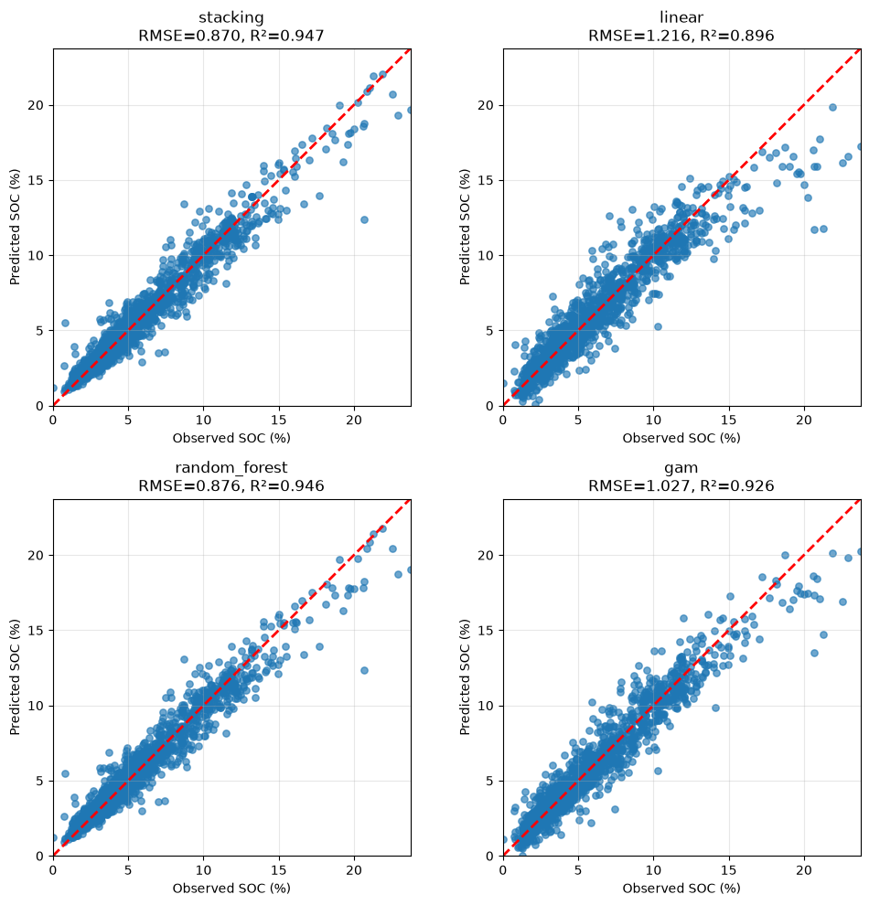
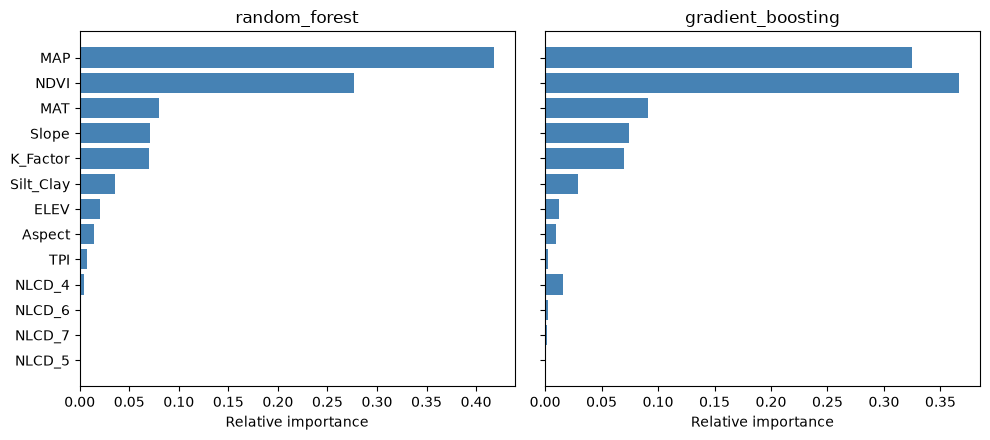
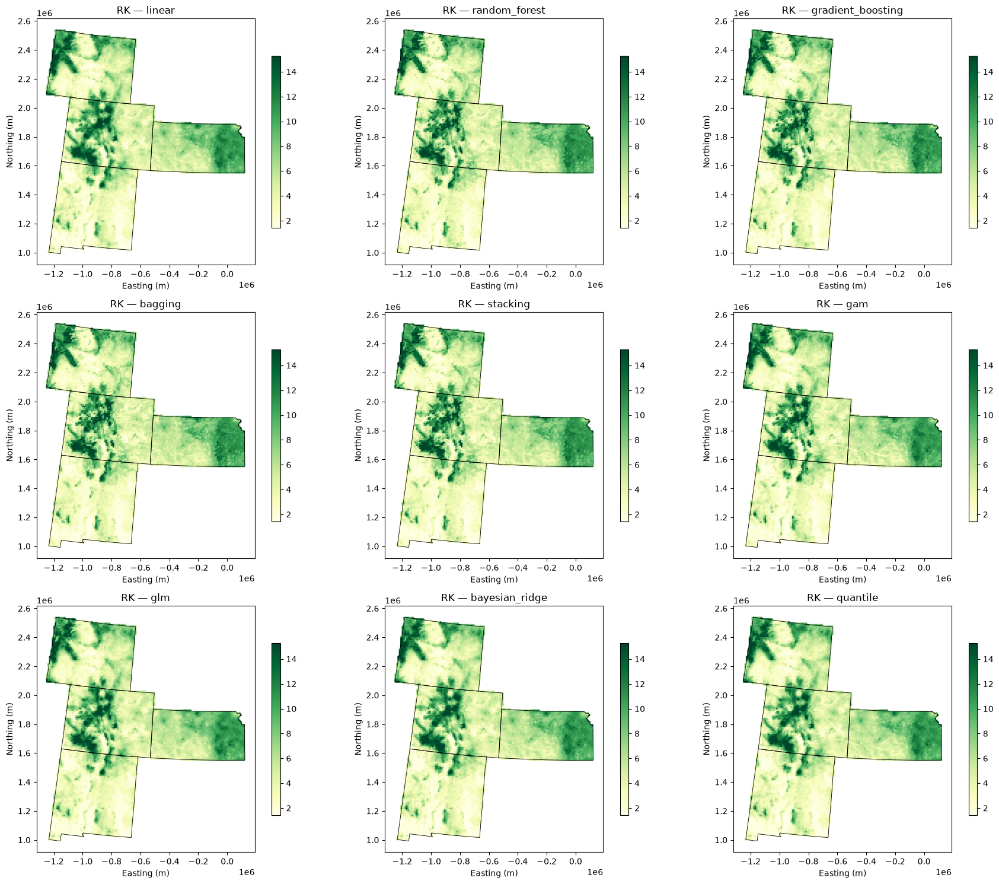
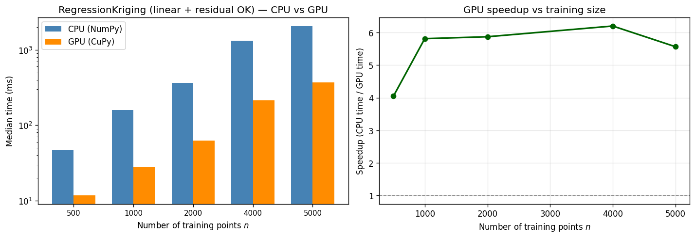

Regression Kriging (RK) is a geostatistical interpolation method that combines deterministic regression modeling with stochastic kriging of residuals to produce spatially optimal predictions.
It is also known as Universal Kriging when the regression model is linear in coordinates, but in modern usage RK typically refers to using external covariates (e.g., elevation, NDVI, land cover) in the regression step.
In geostatistics, Simple Kriging with a Varying Local Mean (SKVLM) and Regression Kriging (RK) refer to the exact same underlying predictive model. The two terms exist because they emerged from different conceptual perspectives:
Simple Kriging with a Varying Local Mean is popularized in the geostatistical school of thought (e.g., Pierre Goovaerts). It treats the process as simple kriging where the global mean (\(\mu\)) is replaced by a known, spatially varying local trend \(m(\mathbf{s})\).
Regression Kriging is widely used in soil science and environmental mapping (e.g., Tomislav Hengl). It treats the process as a two-step framework: first fitting a separate regression model to predict the trend, then using kriging to interpolate the remaining residuals.
RK involves three main steps:
Regression component. A trend model captures the relationship between the target (here, SOC) and explanatory variables (NDVI, climate, terrain, soils, land cover). This is the deterministic part of the spatial variation.
Kriging component. Residuals (observed minus regression-predicted) are interpolated with ordinary kriging, using a variogram of how those residuals vary with distance. This is the stochastic (spatially autocorrelated) part.
Combination. The prediction at location \(\mathbf{s}\) is
where \(\hat{m}(\mathbf{s})\) is the regression trend and \(\hat{e}(\mathbf{s})\) is the kriged residual.
pygstat.RegressionKriging accepts any scikit-learn-compatible estimator, plus string shortcuts grouped as ENSEMBLE_REGRESSORS and STATISTICAL_REGRESSORS.
Ensemble trend models (ENSEMBLE_REGRESSORS)
Shortcut
Estimator
What it does
'linear'
LinearRegression
Ordinary least squares. The original RK default: a global linear trend in the covariates. Fast and interpretable; misses nonlinear effects.
'random_forest'
RandomForestRegressor
Averages many de-correlated trees (bagging + random feature subsets). Robust, hard to overfit badly, little tuning required. Exposes feature_importances_.
'gradient_boosting'
GradientBoostingRegressor
Builds trees sequentially; each tree corrects the previous ensemble’s residual error. Often the most accurate on tabular data, but more sensitive to learning_rate / n_estimators.
'bagging'
BaggingRegressor
Averages the same base learner (a decision tree by default) trained on bootstrap resamples. The simplest variance-reduction ensemble.
'stacking'
StackingRegressor
Trains several diverse base learners (random forest + gradient boosting + linear, by default) and a ridge meta-learner that combines their out-of-fold predictions.
Statistical trend models (STATISTICAL_REGRESSORS)
Shortcut
Estimator
What it does
'gam'
GAMRegressor (pyGAM wrapper)
A generalized additive model: a smooth, per-feature nonlinear trend \(\sum_j s_j(X_j)\) that stays interpretable feature-by-feature, unlike a black-box ensemble. Requires the optional pygam package (pip install pygam or pip install pygstat[gam]).
'glm'
TweedieRegressor
A generalized linear model (exponential-family noise + link). Default is Gaussian (power=0); set regressor_kwargs={"power": 1} for Poisson-like, {"power": 2} for Gamma — useful for non-negative, skewed targets.
'bayesian_ridge'
BayesianRidge
A linear model with a Gaussian prior on the coefficients; regularization is learned from the data (no alpha to tune by hand). rk.regressor.predict(X, return_std=True) also returns the regression model’s own predictive uncertainty.
'quantile'
QuantileRegressor
Models a chosen quantile of the target (median, quantile=0.5, by default) rather than its mean. Set regressor_kwargs={"quantile": 0.9} for an upper-bound risk surface.
Pass an already-constructed estimator for full control, or override any shortcut with regressor_kwargs (e.g. RegressionKriging(regressor="random_forest", regressor_kwargs={"n_estimators": 500})).
Quantile crossing (enforce_quantile_monotonicity)
Independently fitted quantile models (e.g. P10, P50, P90) are not guaranteed to stay ordered at every location — a well-known issue called quantile crossing (Bassett & Koenker, 1982). Kriging each quantile’s own residuals can make crossing worse, because each residual field has a different spatial pattern. enforce_quantile_monotonicity applies the rearrangement of Chernozhukov, Fernández-Val & Galichon (2010): sort the predicted quantiles point-by-point so a lower quantile is never above a higher one.
This tutorial
We map soil organic carbon (SOC) across the US Great Plains using 5,000 samples and a ~10 km prediction grid. NLCD land-cover class is treated as a categorical variable and one-hot encoded (scikit-learn’s linear, GLM, GAM, and tree estimators do not have H2O-style native factors). Every shortcut in AVAILABLE_REGRESSORS is fitted as a regression-kriging model, scored with 5-fold cross-validation on the training set and a held-out 30% test set, then used to predict SOC at grid locations. Section 14 times residual ordinary kriging on CPU vs GPU for prefixes of data/gp_data_5000.csv.
2. Mathematical Formulation
The target variable \(Z(\mathbf{s})\) at location \(\mathbf{s}\) is modeled as:
where \(\mu(\mathbf{s})\) is the deterministic trend (explained by covariates) and \(\varepsilon(\mathbf{s})\) is a spatially autocorrelated residual (zero-mean, stationary).
Fit a regression model
Use covariates \(\mathbf{X} = [x_1, x_2, \ldots, x_p]\) (e.g. elevation, NDVI) to model the trend. For a linear trend:
Covariates: NDVI (vegetation), elevation, MAP (rainfall), land cover, soils, climate
Trend: SOC tends to increase with NDVI and MAP
Residuals: spatial clustering from unmeasured factors (soil type, management)
RK: captures both the global trend and local spatial structure
3. Python Setup
3.1 CPU and GPU
RegressionKriging fits the scikit-learn trend on CPU, then builds the residual covariance and solves the ordinary kriging system on CPU (NumPy/SciPy) or GPU (CuPy). Pass use_gpu as:
Value
Behaviour
'auto' (default)
GPU when CuPy can run a kernel on this card. Falls back to CPU otherwise.
True
Force GPU. Warns and falls back to CPU if CuPy is missing or cannot run a kernel.
False
Always CPU (NumPy/SciPy).
This notebook probes the GPU once with cupy_gpu_usable() (a real op, not just import cupy) and stores the result in USE_GPU. Every RegressionKriging(...) call below passes use_gpu=USE_GPU, so the same cells run on a laptop CPU or a CUDA workstation without edits.
The linear-algebra steps that move to the GPU are the \(n \times n\) residual covariance, the \(n_{\text{pred}} \times n\) covariance to the targets, and the augmented OK solve. The sklearn trend itself always stays on CPU.
Install CuPy with pip install pygstat[gpu] (CUDA 11) or pip install cupy-cuda12x for CUDA 12.
Section 14 times residual OK (RegressionKriging with regressor='linear') on both backends using prefixes of data/gp_data_5000.csv.
Code
%matplotlib inlineimport osimport sysimport warningsfrom collections import Counterfrom pathlib import Pathwarnings.filterwarnings("ignore", category=UserWarning)sys.path.insert(0, os.path.abspath("../src"))import geopandas as gpdimport matplotlib.pyplot as pltimport numpy as npimport pandas as pdfrom sklearn.metrics import mean_absolute_error, mean_squared_error, r2_scorefrom sklearn.model_selection import train_test_splitfrom sklearn.preprocessing import OneHotEncoderimport pygstatfrom pygstat import ( AVAILABLE_REGRESSORS, ENSEMBLE_REGRESSORS, GAMRegressor, KFoldCV_RK, RegressionKriging, STATISTICAL_REGRESSORS, Variogram, enforce_quantile_monotonicity,)from pygstat.utils.backend import CUPY_AVAILABLE, cupy_gpu_usableprint(f"pygstat version : {pygstat.__version__}")print(f"NumPy : {np.__version__}")print(f"pandas : {pd.__version__}")print("ENSEMBLE_REGRESSORS :", ENSEMBLE_REGRESSORS)print("STATISTICAL_REGRESSORS:", STATISTICAL_REGRESSORS)print("AVAILABLE_REGRESSORS :", AVAILABLE_REGRESSORS)print("GAMRegressor :", GAMRegressor)print("enforce_quantile_monotonicity:", enforce_quantile_monotonicity.__name__)# ── CPU / GPU dispatch ────────────────────────────────────────────────────────# cupy_gpu_usable() runs a real kernel (not just `import cupy`). Older cards can# import CuPy and still fail at compile time; those stay on CPU.USE_GPU = cupy_gpu_usable()if USE_GPU:import cupy as cpprint(f"CuPy : {cp.__version__}")try: name = cp.cuda.runtime.getDeviceProperties(0)["name"]ifisinstance(name, bytes): name = name.decode()print(f"GPU : {name}")exceptException:print("GPU : available")print("Backend : GPU (CuPy) — residual OK covariance + solve on GPU")else:if CUPY_AVAILABLE:import cupy as cpprint(f"CuPy : {cp.__version__} (installed, but cannot run a kernel on this GPU/CUDA setup)")else:print("CuPy : not installed (pip install pygstat[gpu] or cupy-cuda12x)")print("Backend : CPU (NumPy)")print(f"use_gpu : {USE_GPU}")
Point samples live in data/gp_data_5000.csv (SOC plus covariates at 5,000 locations). The prediction grid is data/gp_grid.csv (covariates only). Coordinates are US Albers Equal Area (EPSG:5070), in metres.
The CSV header repeats NLCD; pandas renames the second copy to NLCD.1. That extra column is dropped. The first NLCD column matches the grid (classes 3–7) and is kept as a categorical land-cover code.
NLCD is a categorical land-cover class, not a numeric intensity. Recoding it to an ordinal score would impose a false order (forest is not “more NLCD” than shrubland). scikit-learn’s linear models, GLM, quantile regression, GAM, and tree ensembles all see a numeric matrix, so NLCD is one-hot encoded:
OneHotEncoder(drop="first") creates dummy columns and drops the first class as the baseline (avoids the dummy trap in linear / GLM / Bayesian ridge / quantile models).
The same dummy columns are passed to tree ensembles and the GAM so every trend model uses the same feature matrix.
The encoder is fit on the sample table and applied to the prediction grid (handle_unknown="ignore").
A 70% / 30% split, stratified by NLCD class so each land-cover category is represented in both sets (random_state=42).
Code
nlcd_labels = df["NLCD"].to_numpy()counts = Counter(nlcd_labels)stratify_arg = nlcd_labels ifmin(counts.values()) >=2elseNoneX_train, X_test, y_train, y_test, coords_train, coords_test, nlcd_train, nlcd_test = train_test_split( X, y, coords, nlcd_labels, test_size=0.3, random_state=42, shuffle=True, stratify=stratify_arg,)print(f"Training samples: {len(X_train)}, Test samples: {len(X_test)}")print("NLCD distribution in train set:", sorted(Counter(nlcd_train).items()))print("NLCD distribution in test set: ", sorted(Counter(nlcd_test).items()))
Training samples: 3500, Test samples: 1500
NLCD distribution in train set: [(np.int64(3), 13), (np.int64(4), 669), (np.int64(5), 1160), (np.int64(6), 1063), (np.int64(7), 595)]
NLCD distribution in test set: [(np.int64(3), 6), (np.int64(4), 287), (np.int64(5), 497), (np.int64(6), 456), (np.int64(7), 254)]
7. Exploratory Variogram of SOC
Before residual kriging, look at the raw SOC variogram. Lag count uses Scott’s rule on a random subset of pairwise distances, capped at 30 lags: bin width \(h = 3.5 \, \mathrm{std}\,/\, n^{1/3}\).
Residual variograms (next section) typically have a shorter range than the raw SOC variogram, because the regression has already absorbed the large-scale trend. We therefore use a shorter maxlag (50 km, 15 lags) when auto-fitting the residual models — the same setting as the original tutorial.
8. Fit All Regression-Kriging Models
Each shortcut in AVAILABLE_REGRESSORS is built with RegressionKriging(regressor=...). Tree ensembles use a modest n_estimators so the notebook stays interactive; stacking uses a slightly lighter set of base learners than the library default. GAMRegressor is the 'gam' shortcut (shown explicitly below). Hyperparameters can always be overridden with regressor_kwargs.
Fitting RK with regressor='linear' (ensemble) ...
LinearRegression: nugget=0.682, sill=1.753, range=46455.3 m
Fitting RK with regressor='random_forest' (ensemble) ...
RandomForestRegressor: nugget=0.093, sill=0.193, range=25000.0 m
Fitting RK with regressor='gradient_boosting' (ensemble) ...
GradientBoostingRegressor: nugget=0.116, sill=0.528, range=25000.0 m
Fitting RK with regressor='bagging' (ensemble) ...
BaggingRegressor: nugget=0.042, sill=0.088, range=25000.0 m
Fitting RK with regressor='stacking' (ensemble) ...
StackingRegressor: nugget=0.107, sill=0.201, range=25000.0 m
Fitting RK with regressor='gam' (statistical) ...
GAMRegressor: nugget=0.584, sill=0.982, range=46695.8 m
Fitting RK with regressor='glm' (statistical) ...
TweedieRegressor: nugget=0.695, sill=2.194, range=42931.5 m
Fitting RK with regressor='bayesian_ridge' (statistical) ...
BayesianRidge: nugget=0.682, sill=1.751, range=46412.1 m
Fitting RK with regressor='quantile' (statistical) ...
QuantileRegressor: nugget=0.658, sill=1.851, range=47135.8 m
Fitted 9 RK models.
Example GAMRegressor instance: GAMRegressor(distribution='normal', link='identity', n_splines=8, lam=0.6)
9. Cross-Validation and Hold-Out Comparison
For every fitted model we report:
5-fold CV on the training set (KFoldCV_RK) — each fold refits both the trend and the residual kriging
Hold-out test metrics on the 30% test set (model fitted on the full training set)
Leave-one-out CV (LOOCV_RK) is available in pygstat but is omitted here: repeating stacking / gradient boosting hundreds of times is slow, and 5-fold CV already ranks the models.
linear CV RMSE=1.279 R²=0.878 | Test RMSE=1.216 MAE=0.822 R²=0.896
random_forest CV RMSE=0.974 R²=0.929 | Test RMSE=0.876 MAE=0.607 R²=0.946
gradient_boosting CV RMSE=0.954 R²=0.932 | Test RMSE=0.881 MAE=0.613 R²=0.946
bagging CV RMSE=0.974 R²=0.929 | Test RMSE=0.881 MAE=0.605 R²=0.946
stacking CV RMSE=0.959 R²=0.932 | Test RMSE=0.870 MAE=0.604 R²=0.947
gam CV RMSE=1.090 R²=0.912 | Test RMSE=1.027 MAE=0.734 R²=0.926
glm CV RMSE=1.434 R²=0.847 | Test RMSE=1.348 MAE=0.893 R²=0.873
bayesian_ridge CV RMSE=1.279 R²=0.878 | Test RMSE=1.216 MAE=0.821 R²=0.896
quantile CV RMSE=1.271 R²=0.880 | Test RMSE=1.216 MAE=0.814 R²=0.897
Best hold-out RMSE: stacking (StackingRegressor)
regressor
family
estimator
cv_rmse
cv_r2
test_rmse
test_mae
test_r2
0
stacking
ensemble
StackingRegressor
0.959
0.932
0.870
0.604
0.947
1
random_forest
ensemble
RandomForestRegressor
0.974
0.929
0.876
0.607
0.946
2
gradient_boosting
ensemble
GradientBoostingRegressor
0.954
0.932
0.881
0.613
0.946
3
bagging
ensemble
BaggingRegressor
0.974
0.929
0.881
0.605
0.946
4
gam
statistical
GAMRegressor
1.090
0.912
1.027
0.734
0.926
5
quantile
statistical
QuantileRegressor
1.271
0.880
1.216
0.814
0.897
6
linear
ensemble
LinearRegression
1.279
0.878
1.216
0.822
0.896
7
bayesian_ridge
statistical
BayesianRidge
1.279
0.878
1.216
0.821
0.896
8
glm
statistical
TweedieRegressor
1.434
0.847
1.348
0.893
0.873
Code
fig, axes = plt.subplots(1, 2, figsize=(12, 5))order = results.sort_values("test_rmse")colors = ["C0"if f =="ensemble"else"C1"for f in order["family"]]axes[0].barh(order["regressor"], order["cv_rmse"], color=colors, alpha=0.85, label="5-fold CV")axes[0].barh(order["regressor"], order["test_rmse"], color="none", edgecolor="black", linewidth=1.2, label="Hold-out")axes[0].set_xlabel("RMSE (SOC %)")axes[0].set_title("RMSE: cross-validation vs hold-out")axes[0].legend(loc="lower right")axes[0].invert_yaxis()axes[1].barh(order["regressor"], order["cv_r2"], color=colors, alpha=0.85, label="5-fold CV")axes[1].barh(order["regressor"], order["test_r2"], color="none", edgecolor="black", linewidth=1.2, label="Hold-out")axes[1].set_xlabel("R²")axes[1].set_title("R²: cross-validation vs hold-out")axes[1].legend(loc="lower right")axes[1].invert_yaxis()plt.tight_layout()plt.show()

Observed vs predicted on the test set
One-to-one plots for the best model and a few representative alternatives (linear baseline, a tree ensemble, and a statistical model).
Code
show = [best_name]for extra in ("linear", "random_forest", "gam", "quantile"):if extra in fitted and extra notin show: show.append(extra)show = show[:4]pred_lookup = {row["regressor"]: row for row in rows}fig, axes = plt.subplots(2, 2, figsize=(10, 10))lims = [min(y_test.min(), min(pred_lookup[n]["y_pred_test"].min() for n in show)),max(y_test.max(), max(pred_lookup[n]["y_pred_test"].max() for n in show))]for ax, name inzip(axes.ravel(), show): y_hat = pred_lookup[name]["y_pred_test"] ax.scatter(y_test, y_hat, alpha=0.65, s=28) ax.plot(lims, lims, "r--", lw=2) ax.set_xlim(lims) ax.set_ylim(lims) ax.set_aspect("equal", adjustable="box") ax.set_xlabel("Observed SOC (%)") ax.set_ylabel("Predicted SOC (%)") rec = results.set_index("regressor").loc[name] ax.set_title(f"{name}\nRMSE={rec['test_rmse']:.3f}, R²={rec['test_r2']:.3f}") ax.grid(alpha=0.3)plt.tight_layout()plt.show()

Residual variograms of two trend models
The residual variogram depends on the trend: a more flexible regressor typically leaves less structured residual spatial variation (smaller sill / shorter range).
Tree-based ensembles that expose feature_importances_ (random forest and gradient boosting) can be read through RegressionKriging.feature_importances_. Linear models, GAM, GLM, Bayesian ridge, quantile regression, bagging, and most stacking configurations do not.
Code
tree_names = [ n for n in ("random_forest", "gradient_boosting", "bagging")if n in fitted andhasattr(fitted[n].regressor, "feature_importances_")]n_tree =len(tree_names)fig, axes = plt.subplots(1, n_tree, figsize=(5* n_tree, 4.5), sharey=True)if n_tree ==1: axes = [axes]for ax, name inzip(axes, tree_names): rk = fitted[name] imp = pd.Series(rk.feature_importances_, index=encoded_feature_names).sort_values() ax.barh(imp.index, imp.values, color="steelblue") ax.set_title(name) ax.set_xlabel("Relative importance")plt.tight_layout()plt.show()imp_table = pd.DataFrame( {n: fitted[n].feature_importances_ for n in tree_names}, index=encoded_feature_names,)imp_table.round(3)

random_forest
gradient_boosting
NDVI
0.276
0.367
MAP
0.418
0.325
MAT
0.080
0.091
ELEV
0.020
0.012
Slope
0.071
0.074
TPI
0.008
0.003
Aspect
0.014
0.010
K_Factor
0.070
0.070
Silt_Clay
0.036
0.029
NLCD_4
0.005
0.016
NLCD_5
0.000
0.000
NLCD_6
0.001
0.002
NLCD_7
0.001
0.001
11. Quantile Regression Kriging and Monotonicity
regressor='quantile' models a chosen quantile of SOC instead of the mean. Fitting P10, P50, and P90 as separate RK models does not keep them ordered — quantile crossing. enforce_quantile_monotonicity sorts predictions at each location so \(q_{0.1} \le q_{0.5} \le q_{0.9}\).
Each fitted RK model predicts SOC at the gp_grid.csv nodes. We also store the regression-only surface and kriged residuals for the best model, plus kriging standard error. Quantile P10 / P50 / P90 surfaces are predicted on the same grid and then rearranged with enforce_quantile_monotonicity.
For the published map we refit the best model on all 5,000 samples (train + test) so no hold-out information is wasted. Validation metrics above still use only the training fit.
Code
print(f"Refitting best model '{best_name}' on all {len(y)} samples ...")best_full = RegressionKriging( regressor=best_name, regressor_kwargs=REGRESSOR_KWARGS.get(best_name, {}), kriging_type="ordinary", variogram_model="spherical", variogram_kwargs=VARIOGRAM_KWARGS, use_gpu=USE_GPU,)best_full.fit(X, y, coords)print("Predicting SOC on the grid for every trend model ...")for name, rk in fitted.items(): grid_df[f"SOC_{name}"] = rk.predict(X_grid, coords_grid)SOC_pred, SOC_se = best_full.predict(X_grid, coords_grid, return_std=True)grid_df["SOC_best"] = SOC_predgrid_df["SOC_best_se"] = SOC_segrid_df["reg_best"] = best_full.regressor.predict(X_grid)grid_df["resid_best"] = grid_df["SOC_best"] - grid_df["reg_best"]print("Predicting quantile surfaces on the grid ...")q_grid = {}for q, rk_q in quantile_models.items(): q_grid[q] = rk_q.predict(X_grid, coords_grid)q_grid_fixed = enforce_quantile_monotonicity(q_grid)grid_df["SOC_P10"] = q_grid_fixed[0.1]grid_df["SOC_P50"] = q_grid_fixed[0.5]grid_df["SOC_P90"] = q_grid_fixed[0.9]print(grid_df[["x", "y", "SOC_best", "SOC_best_se", "reg_best", "resid_best", "SOC_P10", "SOC_P50", "SOC_P90"]].describe().round(3))
Refitting best model 'stacking' on all 5000 samples ...
Predicting SOC on the grid for every trend model ...
Predicting quantile surfaces on the grid ...
x y SOC_best SOC_best_se reg_best \
count 10674.000 10674.000 10674.000 10674.000 10674.000
mean -753412.225 1757164.871 6.004 0.269 6.005
std 327749.190 382369.477 3.642 0.253 3.595
min -1245285.000 1003795.000 0.033 0.000 0.910
25% -1005285.000 1503795.000 3.248 0.000 3.263
50% -825285.000 1743795.000 5.083 0.480 5.042
75% -625285.000 2023795.000 7.945 0.507 7.886
max 114715.000 2533795.000 23.746 0.565 22.828
resid_best SOC_P10 SOC_P50 SOC_P90
count 10674.000 10674.000 10674.000 10674.000
mean -0.001 5.797 5.988 6.182
std 0.490 3.503 3.516 3.582
min -4.970 -1.451 -0.372 -0.209
25% -0.238 3.194 3.335 3.473
50% -0.013 4.956 5.144 5.308
75% 0.216 7.853 8.074 8.329
max 4.403 23.482 23.482 23.482
Code
out_path = DATA_DIR /"gp_prediction_RK.csv"grid_df.to_csv(out_path, index=False)print(f"Grid predictions saved to {out_path}")
Grid predictions saved to ../data/gp_prediction_RK.csv
13. Map Predictions
Points are plotted in EPSG:5070 with Great Plains state boundaries (data/GP_STATE.shp).
# Side-by-side grid predictions for every trend modeln =len(model_names)ncols =3nrows =int(np.ceil(n / ncols))fig, axes = plt.subplots(nrows, ncols, figsize=(6* ncols, 5* nrows))axes = np.atleast_1d(axes).ravel()for ax, name inzip(axes, model_names): map_points(ax, f"SOC_{name}", "YlGn", f"RK — {name}", vmin, vmax)for ax in axes[n:]: ax.axis("off")plt.tight_layout()plt.show()

14. CPU vs GPU RK Timing
Section 3.1 showed how to select a backend. Here we measure how long residual ordinary kriging takes on CPU (use_gpu=False, NumPy/SciPy) versus GPU (use_gpu=True, CuPy) for prefixes of the Great Plains SOC survey (data/gp_data_5000.csv, \(n\) up to 5{,}000).
The GPU-accelerated steps are the \(n \times n\) residual covariance among training points, the \(n_{\text{pred}} \times n\) covariance to the targets, and the linear solve of the augmented OK system. The sklearn trend (regressor='linear') is cheap and stays on CPU. Residual variograms are fitted once per prefix (spherical model, same maxlag / n_lags as the rest of this notebook) and are not included in the RK times.
Two practical notes:
Small \(n\) and few targets (a few hundred training and prediction points) often shows little GPU gain: host→device copies and kernel-launch overhead dominate.
Larger \(n\), or a dense prediction grid, is where the GPU pays off: the OK system scales as \(O(n^3)\) for the solve and \(O(n \cdot n_{\text{pred}})\) for the target covariances.
Each timing is the median of three RegressionKriging.fit + predict(..., return_std=True) calls after a short GPU warmup so CUDA kernel compilation is not counted. If CuPy cannot run a kernel here, the GPU column is skipped and only CPU times are reported.
Code
import timefrom sklearn.linear_model import LinearRegressionN_REPEATS =3N_PRED_GP =500GP_SIZES = [500, 1000, 2000, 4000, 5000]rng_bench = np.random.default_rng(42)pred_idx = rng_bench.choice(len(X_grid), size=N_PRED_GP, replace=False)X_pred_b = X_grid[pred_idx]xy_pred_b = coords_grid[pred_idx]def _residual_variogram(X_tr, y_tr, xy_tr): lin = LinearRegression().fit(X_tr, y_tr) resid = y_tr - lin.predict(X_tr) vg_kw =dict(VARIOGRAM_KWARGS) vg_kw.pop("use_gpu", None)return Variogram( np.asarray(xy_tr, dtype=float), np.asarray(resid, dtype=float), model="spherical", estimator="matheron", use_gpu=False,**vg_kw, ).fit()def _time_rk(X_tr, y_tr, xy_tr, X_pr, xy_pr, vg, use_gpu, repeats=N_REPEATS, warmup=True):"""Median wall time of RegressionKriging.fit + predict(return_std=True)."""if warmup: k_tr =min(40, len(xy_tr)) k_pr =min(40, len(xy_pr)) RegressionKriging( regressor="linear", variogram=vg, use_gpu=use_gpu ).fit(X_tr[:k_tr], y_tr[:k_tr], xy_tr[:k_tr]).predict( X_pr[:k_pr], xy_pr[:k_pr], return_std=True )if use_gpu:import cupy as cp cp.cuda.Device(0).synchronize() times = [] last =Nonefor _ inrange(repeats): t0 = time.perf_counter() rk_m = RegressionKriging( regressor="linear", variogram=vg, use_gpu=use_gpu ).fit(X_tr, y_tr, xy_tr) last = rk_m.predict(X_pr, xy_pr, return_std=True)if use_gpu:import cupy as cp cp.cuda.Device(0).synchronize() times.append(time.perf_counter() - t0)returnfloat(np.median(times)), lastprint(f"GPU usable : {USE_GPU}")print(f"Repeats : {N_REPEATS} (median wall time of RK fit + predict)")print(f"GP SOC : {len(y)} samples from data/gp_data_5000.csv")print(f"Trend : linear (sklearn stays on CPU; residual OK uses use_gpu)")print(f"GP n_pred : {N_PRED_GP} grid locations")print()rows = []for n in GP_SIZES: X_tr, y_tr, xy_tr = X[:n], y[:n], coords[:n] vg = _residual_variogram(X_tr, y_tr, xy_tr) cpu_t, pred_cpu = _time_rk(X_tr, y_tr, xy_tr, X_pred_b, xy_pred_b, vg, use_gpu=False) row = {"dataset": "GP (SOC)","n_train": n,"n_pred": N_PRED_GP,"CPU (s)": cpu_t,"GPU (s)": np.nan,"speedup": np.nan,"match": "—", }if USE_GPU: gpu_t, pred_gpu = _time_rk(X_tr, y_tr, xy_tr, X_pred_b, xy_pred_b, vg, use_gpu=True) row["GPU (s)"] = gpu_t row["speedup"] = cpu_t / gpu_t z_c, se_c = pred_cpu z_g, se_g = pred_gpu row["match"] =bool( np.allclose(z_c, z_g, rtol=1e-4, atol=1e-4, equal_nan=True)and np.allclose(se_c, se_g, rtol=1e-4, atol=1e-4, equal_nan=True) )import cupy as cp cp.get_default_memory_pool().free_all_blocks() rows.append(row)df_bench = pd.DataFrame(rows)df_show = df_bench.copy()df_show["CPU (ms)"] = (df_show["CPU (s)"] *1000).round(1)df_show["GPU (ms)"] = (df_show["GPU (s)"] *1000).round(1)df_show["speedup"] = df_show["speedup"].map(lambda x: "—"if pd.isna(x) elsef"{x:.2f}×")print(df_show[["dataset", "n_train", "n_pred", "CPU (ms)", "GPU (ms)", "speedup", "match"]].to_string(index=False))fig, axes = plt.subplots(1, 2, figsize=(12, 4.2))n_vals = df_bench["n_train"].to_numpy()cpu_ms = df_bench["CPU (s)"].to_numpy() *1000gpu_ms = df_bench["GPU (s)"].to_numpy() *1000labels = [str(int(n)) for n in n_vals]x = np.arange(len(n_vals))w =0.36axes[0].bar(x - w /2, cpu_ms, w, label="CPU (NumPy)", color="steelblue")if USE_GPU and np.isfinite(gpu_ms).all(): axes[0].bar(x + w /2, gpu_ms, w, label="GPU (CuPy)", color="darkorange")axes[0].set_xticks(x)axes[0].set_xticklabels(labels, fontsize=9)axes[0].set_xlabel("Number of training points $n$")axes[0].set_ylabel("Median time (ms)")axes[0].set_title("RegressionKriging (linear + residual OK) — CPU vs GPU")axes[0].legend()axes[0].set_yscale("log")if USE_GPU: axes[1].plot(n_vals, df_bench["speedup"], "o-", color="darkgreen", lw=2) axes[1].axhline(1.0, color="grey", ls="--", lw=1) axes[1].set_xlabel("Number of training points $n$") axes[1].set_ylabel("Speedup (CPU time / GPU time)") axes[1].set_title("GPU speedup vs training size") axes[1].grid(True, alpha=0.3)else: axes[1].text(0.5, 0.5,"GPU not usable in this environment\nCPU-only timings shown", ha="center", va="center", transform=axes[1].transAxes, ) axes[1].set_axis_off()plt.tight_layout()plt.show()
GPU usable : True
Repeats : 3 (median wall time of RK fit + predict)
GP SOC : 5000 samples from data/gp_data_5000.csv
Trend : linear (sklearn stays on CPU; residual OK uses use_gpu)
GP n_pred : 500 grid locations
dataset n_train n_pred CPU (ms) GPU (ms) speedup match
GP (SOC) 500 500 47.4 11.7 4.05× True
GP (SOC) 1000 500 160.4 27.6 5.81× True
GP (SOC) 2000 500 367.5 62.6 5.87× True
GP (SOC) 4000 500 1324.9 213.6 6.20× True
GP (SOC) 5000 500 2072.3 372.3 5.57× True

Predictions and residual-kriging standard errors from the two backends should match (match = True). The sklearn linear trend is the same on both runs; the GPU speedup comes from the residual OK covariance build and solve. On the Great Plains SOC prefixes the \(O(n^2)\) covariance and \(O(n^3)\) solve keep the GPU several times faster as \(n\) grows to 5{,}000. Use use_gpu=USE_GPU (as the rest of this notebook does) so the same cells run on a laptop CPU or a CUDA workstation without edits.
15. Summary and Conclusions
This notebook applied regression kriging to Great Plains soil organic carbon, combining a covariate-driven trend with ordinary kriging of residuals (pygstat.RegressionKriging).
Data. 5,000 samples (gp_data_5000.csv) and a 10 km grid (gp_grid.csv). NLCD is a categorical land-cover class, dummy-encoded with OneHotEncoder(drop="first") rather than treated as an ordinal score.
Trend models. Every shortcut in ENSEMBLE_REGRESSORS (linear, random_forest, gradient_boosting, bagging, stacking) and STATISTICAL_REGRESSORS (gam / GAMRegressor, glm, bayesian_ridge, quantile) was fitted as an RK model.
Validation. Models were ranked with 5-fold CV on the training set and a NLCD-stratified 30% hold-out. Tree ensembles and the GAM typically improve on a plain linear trend because SOC–covariate relationships are nonlinear; residual kriging then adds local spatial structure that regression alone misses.
Quantiles. Independently kriged P10 / P50 / P90 surfaces cross. enforce_quantile_monotonicity restores order at every location without changing the set of predicted values.
Mapping. SOC, the regression trend, kriged residuals, kriging standard error, and rearranged quantile surfaces were predicted on gp_grid.csv.
CPU / GPU. Residual ordinary kriging (use_gpu=USE_GPU) was timed on prefixes of gp_data_5000.csv. The sklearn trend stays on CPU; the \(O(n^2)\) covariance and \(O(n^3)\) OK solve are the GPU-accelerated steps.
Regression kriging remains a practical default for digital soil mapping: a flexible trend for what the covariates can explain, and geostatistics for what they cannot.
16. Resources
Papers and books
Reference
Notes
Hengl, T., Heuvelink, G.B.M. & Stein, A. (2004). A generic framework for spatial prediction of soil variables based on regression-kriging. Geoderma 120, 75–93.
RK as used in digital soil mapping
Hengl, T., Heuvelink, G.B.M. & Rossiter, D.G. (2007). About regression-kriging: from equations to case studies. Computers & Geosciences 33, 1301–1315.
Practical RK workflow
Odeh, I.O.A., McBratney, A.B. & Chittleborough, D.J. (1995). Further results on prediction of soil properties from terrain attributes: heterotopic cokriging and regression-kriging. Geoderma 67, 215–226.
Early RK for soil properties
Goovaerts, P. (1997). Geostatistics for Natural Resources Evaluation. Oxford University Press.
SK with a varying local mean
Chernozhukov, V., Fernández-Val, I. & Galichon, A. (2010). Quantile and probability curves without crossing. Econometrica 78, 1093–1125.